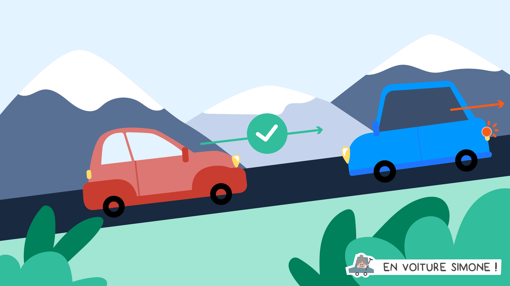
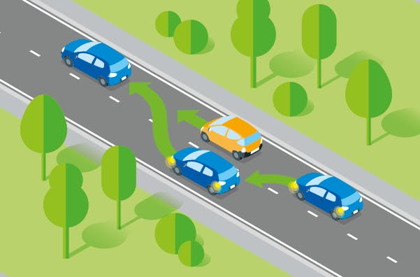

Les croisements et les dépassements
Les automobilistes seront amenés à conduire en présence de nombreux autres chauffeurs, qu’ils devront croiser ou dépasser en fonction des situations.
La réglementation liée aux croisements :
Les automobilistes doivent savoir que la priorité est laissée au véhicule le plus lourd dans les croisements difficiles, et qu'ils devront adapter leur comportement en conséquence. Présence d'une place d'évitement dans le cadre d'un croisement difficile
Règles liées aux dépassements :
Avant de réaliser un dépassement, les automobilistes doivent vérifier qu'ils peuvent dépasser sans risque. Pour cela, ils doivent :
- s’assurer que le dépassement est autorisé
- s’assurer que la visibilité vers l’avant est suffisante
- s’assurer que leur manœuvre ne gênera pas de chauffeur à l’avant comme à l’arrière
Une fois toutes ces vérifications faites, les automobilistes pourront réaliser leurs contrôles visuels, actionner leur clignotant et concrétiser leur manœuvre de dépassement sans représenter un danger.
